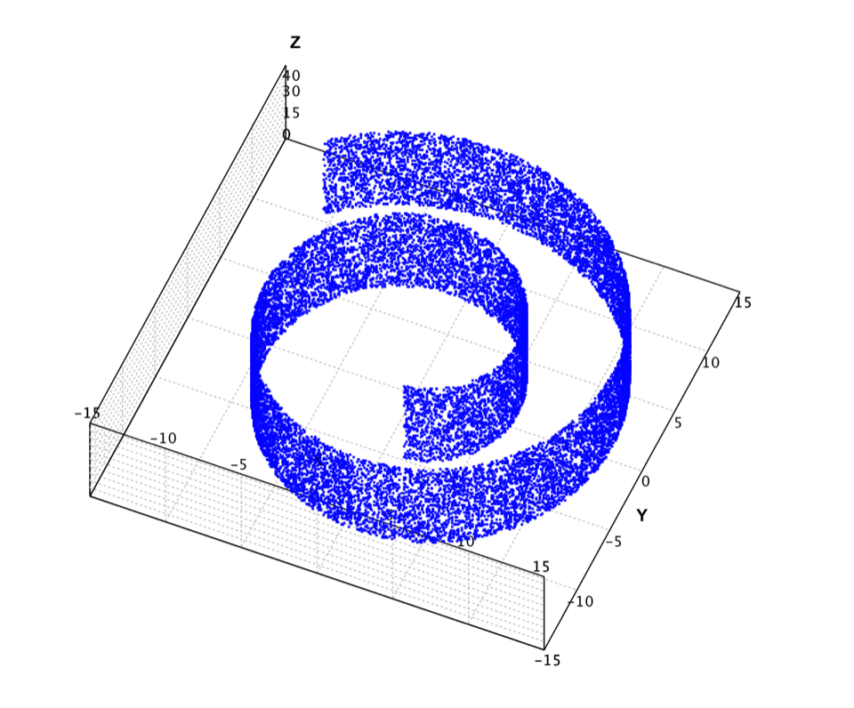
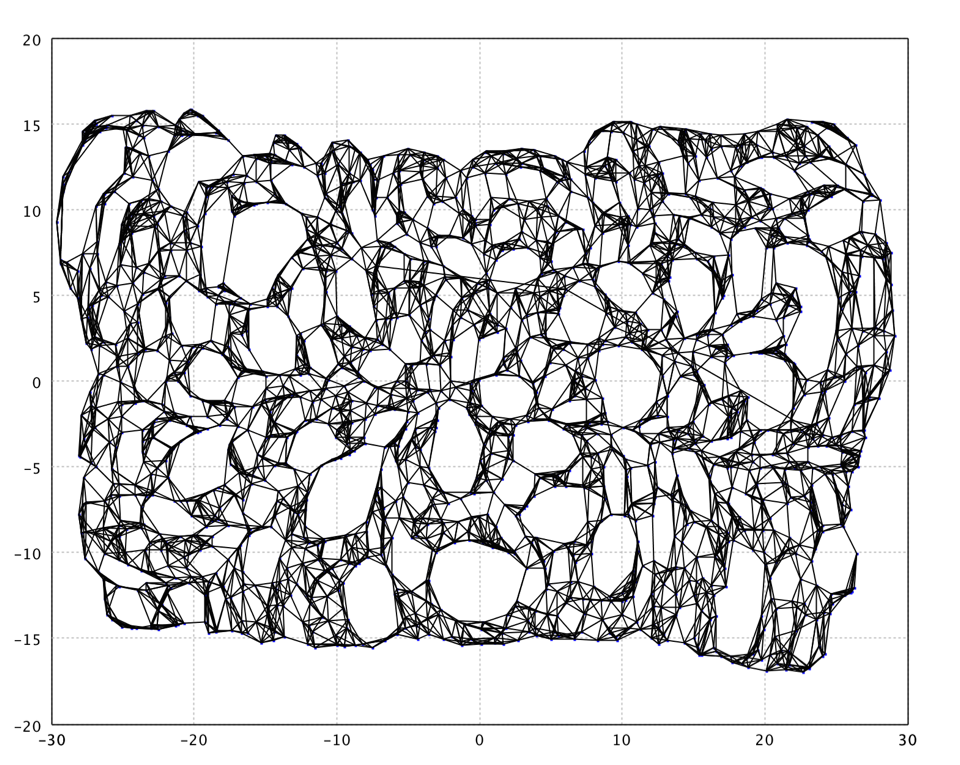
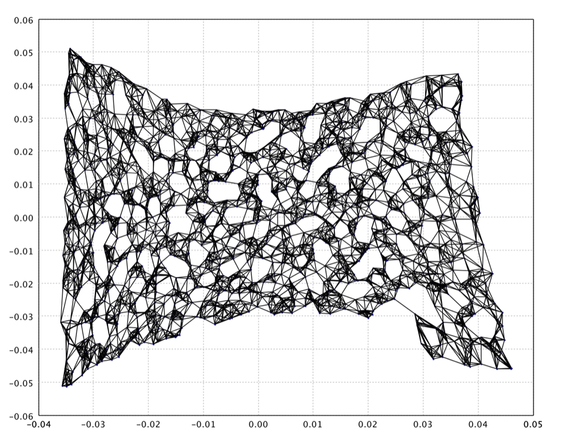
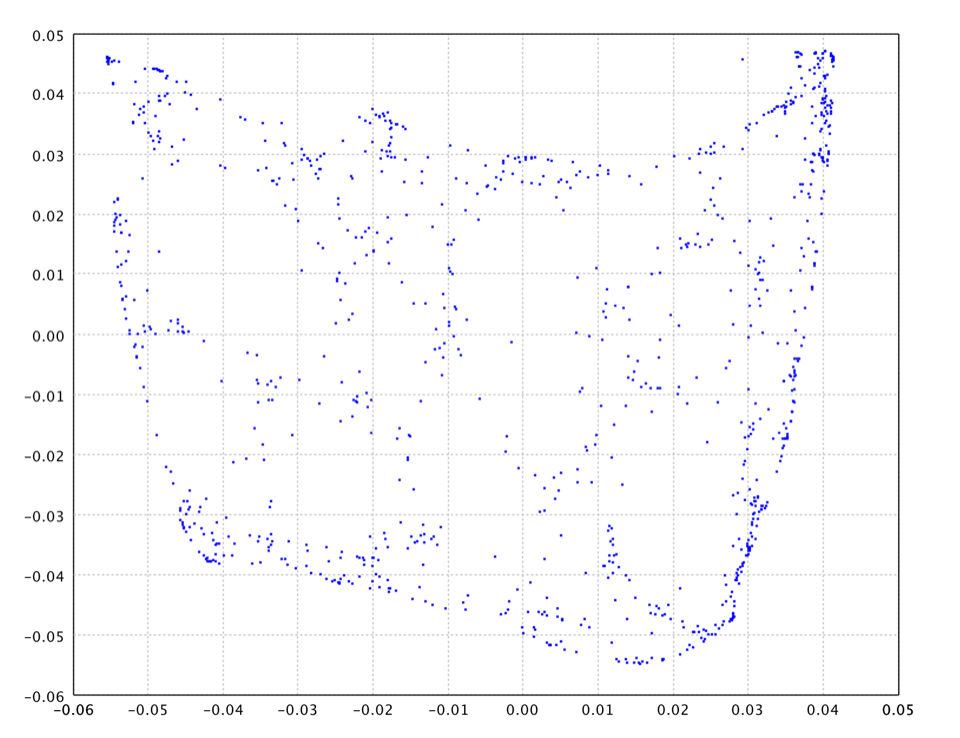
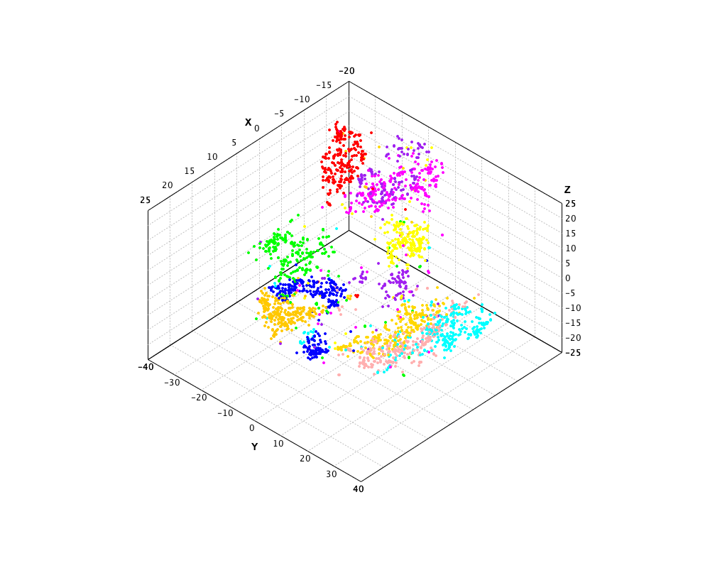
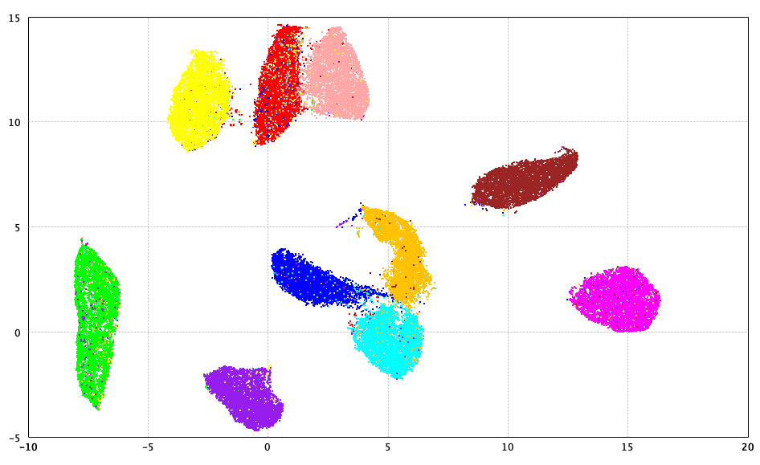

{% include "toc.njk" %}

<div class="col-md-9 order-md-first">
    <h1 id="manifold-top" class="title">Manifold Learning</h1>


    <h2 id="overview" class="title">Overview</h2>

    <p>Manifold learning finds a low-dimensional basis for describing high-dimensional data. Though each point may have thousands of features, the data often lie on (or near) a low-dimensional manifold embedded in that high-dimensional space. Manifold algorithms recover coordinates on that manifold for visualization and downstream analysis.</p>
    <p>SMILE’s nonlinear embedding methods live in <a href="api/java/smile/manifold/package-summary.html"><code>smile.manifold</code></a>: IsoMap, LLE, Laplacian Eigenmaps, Kernel PCA, t-SNE, and UMAP. Classical MDS, Kruskal’s nonmetric MDS, and Sammon’s mapping are covered on the <a href="mds.html">Multi-Dimensional Scaling</a> page.</p>
    <p>All algorithms follow the same pattern: build an <code>Options</code> record, call static <code>fit</code>, and read the embedding coordinates. Options round-trip through <code>java.util.Properties</code> for hyperparameter search.</p>


    <h3 id="when-to-use">When to Use</h3>

    <div class="table-responsive">
        <table class="table table-striped table-bordered">
            <thead><tr><th>Task</th><th>Recommended approach</th></tr></thead>
            <tbody>
            <tr><td>Visualize high-dimensional data</td><td>t-SNE, UMAP, or IsoMap</td></tr>
            <tr><td>Exploit known nonlinear manifold structure</td><td>IsoMap, LLE, Laplacian Eigenmaps</td></tr>
            <tr><td>Apply a Mercer kernel / out-of-sample projection</td><td>KPCA (supports <code>apply()</code> for new points)</td></tr>
            <tr><td>Large datasets (tens of thousands of points)</td><td>UMAP (scales via approximate nearest-neighbor graphs)</td></tr>
            <tr><td>Preserve global pairwise / rank distances</td><td>See <a href="mds.html">MDS</a> (classical, isotonic, Sammon)</td></tr>
            </tbody>
        </table>
    </div>


    <h3 id="comparison">Algorithm Comparison</h3>

    <div class="table-responsive">
        <table class="table table-striped table-bordered">
            <thead><tr><th>Algorithm</th><th>Type</th><th>Preserves</th><th>Out-of-sample</th><th>Scalability</th></tr></thead>
            <tbody>
            <tr><td>IsoMap</td><td>Graph-based</td><td>Geodesic distances</td><td>No</td><td>O(n²)</td></tr>
            <tr><td>LLE</td><td>Spectral</td><td>Local linear structure</td><td>No</td><td>O(n²)</td></tr>
            <tr><td>Laplacian Eigenmaps</td><td>Spectral</td><td>Local neighborhood</td><td>No</td><td>O(n²)</td></tr>
            <tr><td>KPCA</td><td>Kernel / spectral</td><td>Kernel similarity</td><td>Yes</td><td>O(n²)</td></tr>
            <tr><td>t-SNE</td><td>Probabilistic</td><td>Local neighborhoods</td><td>No</td><td>O(n²)</td></tr>
            <tr><td>UMAP</td><td>Topological</td><td>Local + global structure</td><td>No</td><td>O(n log n) approx.</td></tr>
            </tbody>
        </table>
    </div>


    <h2 id="isomap" class="title">Isomap</h2>

    <p>Isometric feature mapping (IsoMap) embeds high-dimensional points by combining geodesic distances on a neighborhood graph with classical multidimensional scaling. Straight-line Euclidean distances often cut through the ambient space; IsoMap instead sums edge weights along shortest paths so the embedding respects the manifold’s intrinsic geometry.</p>
    <p>Connectivity uses the <code>k</code> nearest Euclidean neighbors. If <code>k</code> is too large, short-circuit edges can distort many geodesic distances; if too small, the graph may be too sparse to approximate geodesics. Only the largest connected component is embedded — increase <code>k</code> if the data fragment.</p>
    <p>When <code>conformal</code> is <code>true</code> (the default), C-Isomap rescales edge weights to magnify high-density regions and shrink low-density ones, which can yield more uniform embeddings on non-uniformly sampled manifolds.</p>

    <p>Hyperparameters are fields of the nested <code>IsoMap.Options</code> record. Pass an <code>Options</code> instance to <code>fit</code>, or a <code>java.util.Properties</code> map using the keys below (<code>Options.toProperties()</code> / <code>Options.of(props)</code> round-trip). Convenience constructor <code>new IsoMap.Options(k)</code> uses <code>d = 2</code> and <code>conformal = true</code>.</p>

    <dl class="options-dl">
        <dt><code>k</code><br><code>smile.isomap.k</code></dt>
        <dd>Number of nearest neighbors (≥ 2). Default <code>7</code>.</dd>
        <dt><code>d</code><br><code>smile.isomap.d</code></dt>
        <dd>Embedding dimension (≥ 2). Default <code>2</code>.</dd>
        <dt><code>conformal</code><br><code>smile.isomap.conformal</code></dt>
        <dd>C-Isomap if <code>true</code>, otherwise standard IsoMap. Default <code>true</code>.</dd>
    </dl>


    <div class="code-playground glass" data-lang="java">
  <div class="playground-toolbar">
    <button type="button" class="lang-tab is-active" data-lang="java" data-pane="pg-1-0">Java</button>
    <button type="button" class="lang-tab" data-lang="scala" data-pane="pg-1-1">Scala</button>
    <button type="button" class="lang-tab" data-lang="kotlin" data-pane="pg-1-2">Kotlin</button>
    <span class="toolbar-spacer"></span>
    <button type="button" class="btn btn-ghost btn-sm playground-copy">Copy</button>
    {% include "components/playground-extra-actions.njk" %}
  </div>
    <div id="pg-1-0" class="hero-pane">
      <pre class="playground-source language-java"><code class="language-java">import smile.manifold.IsoMap;
import smile.graph.NearestNeighborGraph;

double[][] coords = IsoMap.fit(data, new IsoMap.Options(7, 2, false));
double[][] ccoords = IsoMap.fit(data, new IsoMap.Options(7));

NearestNeighborGraph nng = NearestNeighborGraph.of(data, 7);
double[][] fromNng = IsoMap.fit(nng, new IsoMap.Options(7));</code></pre>
    </div>
    <div id="pg-1-1" class="hero-pane" hidden>
      <pre class="playground-source language-scala"><code class="language-scala">import smile.manifold._

val coords = isomap(data, 7, d = 2, CIsomap = false)
val ccoords = isomap(data, 7)</code></pre>
    </div>
    <div id="pg-1-2" class="hero-pane" hidden>
      <pre class="playground-source language-kotlin"><code class="language-kotlin">import smile.manifold.*

val coords = isomap(data, 7, d = 2, CIsomap = false)
val ccoords = isomap(data, 7)</code></pre>
    </div>
  <div class="playground-editor" hidden></div>
</div>


    <figure class="plot-figure">
        
        <figcaption>Swiss Roll</figcaption>
    </figure>

    <p>The classic <a href="https://people.cs.uchicago.edu/~dinoj/manifold/swissroll.html">Swiss roll</a> maps 2-D points into 3-D with a smooth function so algorithms can be judged on how well they unfold the surface. The file has 20,000 samples; computing all-pairs shortest paths is expensive, so the example below uses the first 2,000 points.</p>


    <div class="code-playground glass" data-lang="java">
  <div class="playground-toolbar">
    <button type="button" class="lang-tab is-active" data-lang="java" data-pane="pg-2-0">Java</button>
    <button type="button" class="lang-tab" data-lang="scala" data-pane="pg-2-1">Scala</button>
    <button type="button" class="lang-tab" data-lang="kotlin" data-pane="pg-2-2">Kotlin</button>
    <span class="toolbar-spacer"></span>
    <button type="button" class="btn btn-ghost btn-sm playground-copy">Copy</button>
    {% include "components/playground-extra-actions.njk" %}
  </div>
    <div id="pg-2-0" class="hero-pane">
      <pre class="playground-source language-java"><code class="language-java">import java.awt.Color;
import java.util.Arrays;
import java.util.List;
import java.util.stream.IntStream;
import org.apache.commons.csv.CSVFormat;
import smile.io.Read;
import smile.manifold.IsoMap;
import smile.graph.NearestNeighborGraph;
import smile.plot.swing.ScatterPlot;
import smile.plot.swing.Wireframe;

var swissroll = Read.csv("data/manifold/swissroll.txt",
    CSVFormat.DEFAULT.withDelimiter('\t')).toArray();
ScatterPlot.of(swissroll, '.', Color.BLUE).figure().show();

var data = Arrays.copyOf(swissroll, 2000);
var nng = NearestNeighborGraph.of(data, 7).largest(false);
var map = IsoMap.fit(nng, new IsoMap.Options(7, 2, false));

var graph = nng.graph(false);
var edges = IntStream.range(0, data.length)
    .mapToObj(graph::getEdges)
    .flatMap(List::stream)
    .map(edge -&gt; new int[]{edge.u(), edge.v()})
    .toArray(int[][]::new);
Wireframe.of(map, edges).figure().show();</code></pre>
      <pre class="playground-output" aria-label="Expected output"><code>
// Wireframe / ScatterPlot windows
(opens Swiss roll and IsoMap embedding)
      </code></pre>
    </div>
    <div id="pg-2-1" class="hero-pane" hidden>
      <pre class="playground-source language-scala"><code class="language-scala">import smile.manifold._
import smile.plot.swing.ScatterPlot
import smile.read
import java.awt.Color.BLUE

val swissroll = read.csv("data/manifold/swissroll.txt",
  header = false, delimiter = "\t").toArray()
ScatterPlot.of(swissroll, '.', BLUE).figure.show

val data = swissroll.slice(0, 2000)
val map = isomap(data, 7, CIsomap = false)
ScatterPlot.of(map, '.', BLUE).figure.show</code></pre>
      <pre class="playground-output" aria-label="Expected output"><code>
// Wireframe / ScatterPlot windows
(opens Swiss roll and IsoMap embedding)
      </code></pre>
    </div>
    <div id="pg-2-2" class="hero-pane" hidden>
      <pre class="playground-source language-kotlin"><code class="language-kotlin">import java.awt.Color
import smile.io.Read
import smile.manifold.*
import smile.plot.swing.ScatterPlot
import org.apache.commons.csv.CSVFormat

val swissroll = Read.csv("data/manifold/swissroll.txt",
    CSVFormat.DEFAULT.withDelimiter('\t')).toArray()
ScatterPlot.of(swissroll, '.', Color.BLUE).figure().show()

val data = swissroll.copyOf(2000)
val map = isomap(data, 7, CIsomap = false)
ScatterPlot.of(map, '.', Color.BLUE).figure().show()</code></pre>
      <pre class="playground-output" aria-label="Expected output"><code>
// Wireframe / ScatterPlot windows
(opens Swiss roll and IsoMap embedding)
      </code></pre>
    </div>
  <div class="playground-editor" hidden></div>
</div>

    <p>Here <code>k = 7</code>. The Java sample also draws nearest-neighbor edges in the 2-D embedding. IsoMap can leave Swiss-cheese holes; a vector-quantization pre-step often helps.</p>


    <figure class="plot-figure">
        
        <figcaption>Isomap on Swiss Roll</figcaption>
    </figure>


    <h2 id="lle" class="title">Locally Linear Embedding (LLE)</h2>

    <p>Locally Linear Embedding (LLE) finds neighbors of each point, computes weights that reconstruct the point as a linear combination of those neighbors, then solves an eigenvector problem so the same weights hold in the low-dimensional embedding. Sparse-matrix implementations make optimization fast, and results are often better than IsoMap on many problems.</p>
    <p>When <code>k</code> exceeds the ambient dimension, the local Gram matrix is rank-deficient and LLE adds a small trace-proportional regularizer (factor <code>1E-3</code>). LLE handles non-uniform sample density poorly — prefer Laplacian Eigenmaps or UMAP when densities vary strongly.</p>

    <p>Hyperparameters are fields of the nested <code>LLE.Options</code> record. Pass an <code>Options</code> instance to <code>fit</code>, or a <code>java.util.Properties</code> map using the keys below (<code>Options.toProperties()</code> / <code>Options.of(props)</code> round-trip). Convenience constructor <code>new LLE.Options(k)</code> uses <code>d = 2</code>. You may also pass a pre-built <code>NearestNeighborGraph</code> with <code>LLE.fit(data, nng, d)</code>.</p>

    <dl class="options-dl">
        <dt><code>k</code><br><code>smile.lle.k</code></dt>
        <dd>Number of nearest neighbors (≥ 2). Default <code>7</code>.</dd>
        <dt><code>d</code><br><code>smile.lle.d</code></dt>
        <dd>Embedding dimension (≥ 2). Default <code>2</code>.</dd>
    </dl>


    <div class="code-playground glass" data-lang="java">
  <div class="playground-toolbar">
    <button type="button" class="lang-tab is-active" data-lang="java" data-pane="pg-3-0">Java</button>
    <button type="button" class="lang-tab" data-lang="scala" data-pane="pg-3-1">Scala</button>
    <button type="button" class="lang-tab" data-lang="kotlin" data-pane="pg-3-2">Kotlin</button>
    <span class="toolbar-spacer"></span>
    <button type="button" class="btn btn-ghost btn-sm playground-copy">Copy</button>
    {% include "components/playground-extra-actions.njk" %}
  </div>
    <div id="pg-3-0" class="hero-pane">
      <pre class="playground-source language-java"><code class="language-java">import smile.manifold.LLE;
import smile.graph.NearestNeighborGraph;
import smile.io.Read;
import org.apache.commons.csv.CSVFormat;
import java.util.Arrays;

var swissroll = Read.csv("data/manifold/swissroll.txt",
    CSVFormat.DEFAULT.withDelimiter('\t')).toArray();
var data = Arrays.copyOf(swissroll, 2000);

double[][] coords = LLE.fit(data, new LLE.Options(8));
NearestNeighborGraph nng = NearestNeighborGraph.of(data, 8);
double[][] fromNng = LLE.fit(data, nng, 2);</code></pre>
      <pre class="playground-output" aria-label="Expected output"><code>
// LLE embedding of Swiss roll (k = 8)
      </code></pre>
    </div>
    <div id="pg-3-1" class="hero-pane" hidden>
      <pre class="playground-source language-scala"><code class="language-scala">import smile.manifold._
import smile.read

val swissroll = read.csv("data/manifold/swissroll.txt",
  header = false, delimiter = "\t").toArray()
val data = swissroll.slice(0, 2000)
val map = lle(data, 8)</code></pre>
      <pre class="playground-output" aria-label="Expected output"><code>
// LLE embedding of Swiss roll (k = 8)
      </code></pre>
    </div>
    <div id="pg-3-2" class="hero-pane" hidden>
      <pre class="playground-source language-kotlin"><code class="language-kotlin">import smile.io.Read
import smile.manifold.*
import org.apache.commons.csv.CSVFormat

val swissroll = Read.csv("data/manifold/swissroll.txt",
    CSVFormat.DEFAULT.withDelimiter('\t')).toArray()
val data = swissroll.copyOf(2000)
val map = lle(data, 8)</code></pre>
      <pre class="playground-output" aria-label="Expected output"><code>
// LLE embedding of Swiss roll (k = 8)
      </code></pre>
    </div>
  <div class="playground-editor" hidden></div>
</div>


    <figure class="plot-figure">
        
        <figcaption>LLE on Swiss Roll</figcaption>
    </figure>


    <h2 id="laplacian" class="title">Laplacian Eigenmap</h2>

    <p>Laplacian Eigenmaps build a low-dimensional map that preserves local neighborhood structure via the graph Laplacian. Connected neighbors are penalized for drifting apart in the embedding. The discrete map approximates a continuous embedding that arises from the manifold’s geometry.</p>
    <p>Two weighting schemes: discrete weights (<code>t ≤ 0</code>, all edges weight 1) and heat-kernel weights (<code>t &gt; 0</code>): <code>exp(−‖x<sub>i</sub>−x<sub>j</sub>‖² / t)</code>. Larger <code>t</code> yields more uniform weights; smaller <code>t</code> emphasizes only very close neighbors.</p>
    <p>The method is relatively insensitive to outliers and noise and avoids short-circuiting because only local distances enter the graph. It is closely related to spectral clustering and diffusion maps.</p>

    <p>Hyperparameters are fields of the nested <code>LaplacianEigenmap.Options</code> record. Pass an <code>Options</code> instance to <code>fit</code>, or a <code>java.util.Properties</code> map using the keys below (<code>Options.toProperties()</code> / <code>Options.of(props)</code> round-trip). Convenience constructor <code>new LaplacianEigenmap.Options(k)</code> uses <code>d = 2</code> and <code>t = -1</code>.</p>

    <dl class="options-dl">
        <dt><code>k</code><br><code>smile.laplacian_eigenmap.k</code></dt>
        <dd>Number of nearest neighbors (≥ 2). Default <code>7</code>.</dd>
        <dt><code>d</code><br><code>smile.laplacian_eigenmap.d</code></dt>
        <dd>Embedding dimension (≥ 2). Default <code>2</code>.</dd>
        <dt><code>t</code><br><code>smile.laplacian_eigenmap.t</code></dt>
        <dd>Heat-kernel width. Non-positive → discrete weights. Default <code>-1</code>.</dd>
    </dl>


    <div class="code-playground glass" data-lang="java">
  <div class="playground-toolbar">
    <button type="button" class="lang-tab is-active" data-lang="java" data-pane="pg-4-0">Java</button>
    <button type="button" class="lang-tab" data-lang="scala" data-pane="pg-4-1">Scala</button>
    <button type="button" class="lang-tab" data-lang="kotlin" data-pane="pg-4-2">Kotlin</button>
    <span class="toolbar-spacer"></span>
    <button type="button" class="btn btn-ghost btn-sm playground-copy">Copy</button>
    {% include "components/playground-extra-actions.njk" %}
  </div>
    <div id="pg-4-0" class="hero-pane">
      <pre class="playground-source language-java"><code class="language-java">import smile.manifold.LaplacianEigenmap;
import smile.graph.NearestNeighborGraph;
import smile.io.Read;
import org.apache.commons.csv.CSVFormat;
import java.util.Arrays;

var swissroll = Read.csv("data/manifold/swissroll.txt",
    CSVFormat.DEFAULT.withDelimiter('\t')).toArray();
var data = Arrays.copyOf(swissroll, 2000);

double[][] discrete = LaplacianEigenmap.fit(data,
    new LaplacianEigenmap.Options(7));
double[][] gauss = LaplacianEigenmap.fit(data,
    new LaplacianEigenmap.Options(7, 2, 25.0));

NearestNeighborGraph nng = NearestNeighborGraph.of(data, 7);
double[][] fromNng = LaplacianEigenmap.fit(nng,
    new LaplacianEigenmap.Options(7, 2, 25.0));</code></pre>
      <pre class="playground-output" aria-label="Expected output"><code>
// Laplacian Eigenmap with heat kernel t = 25
      </code></pre>
    </div>
    <div id="pg-4-1" class="hero-pane" hidden>
      <pre class="playground-source language-scala"><code class="language-scala">import smile.manifold._
import smile.read

val swissroll = read.csv("data/manifold/swissroll.txt",
  header = false, delimiter = "\t").toArray()
val data = swissroll.slice(0, 2000)
val map = laplacian(data, 7, d = 2, t = 25.0)</code></pre>
      <pre class="playground-output" aria-label="Expected output"><code>
// Laplacian Eigenmap with heat kernel t = 25
      </code></pre>
    </div>
    <div id="pg-4-2" class="hero-pane" hidden>
      <pre class="playground-source language-kotlin"><code class="language-kotlin">import smile.io.Read
import smile.manifold.*
import org.apache.commons.csv.CSVFormat

val swissroll = Read.csv("data/manifold/swissroll.txt",
    CSVFormat.DEFAULT.withDelimiter('\t')).toArray()
val data = swissroll.copyOf(2000)
val map = laplacian(data, 7, d = 2, t = 25.0)</code></pre>
      <pre class="playground-output" aria-label="Expected output"><code>
// Laplacian Eigenmap with heat kernel t = 25
      </code></pre>
    </div>
  <div class="playground-editor" hidden></div>
</div>


    <figure class="plot-figure">
        
        <figcaption>Laplacian Eigenmap on Swiss Roll</figcaption>
    </figure>


    <h2 id="kpca" class="title">Kernel PCA (KPCA)</h2>

    <p>Kernel PCA applies a Mercer kernel to map data into a (possibly infinite-dimensional) feature space, then runs PCA there. Nonlinear structure that linear PCA misses can appear in the kernel principal components.</p>
    <p>Unlike most manifold methods, <code>KPCA</code> implements <code>Function&lt;T, double[]&gt;</code>: call <code>apply(newPoint)</code> to project out-of-sample points with the same kernel. Components whose eigenvalues fall below <code>threshold</code> are discarded even if more than <code>d</code> were requested.</p>

    <p>Hyperparameters are fields of the nested <code>KPCA.Options</code> record. Pass an <code>Options</code> instance to <code>fit</code>, or a <code>java.util.Properties</code> map using the keys below (<code>Options.toProperties()</code> / <code>Options.of(props)</code> round-trip). Convenience constructor <code>new KPCA.Options(d)</code> uses <code>threshold = 1E-4</code>.</p>

    <dl class="options-dl">
        <dt><code>d</code><br><code>smile.kpca.d</code></dt>
        <dd>Number of principal components to keep (≥ 2). Default <code>2</code>.</dd>
        <dt><code>threshold</code><br><code>smile.kpca.threshold</code></dt>
        <dd>Eigenvalue floor; smaller components are dropped. Default <code>1E-4</code>.</dd>
    </dl>


    <div class="code-playground glass" data-lang="java">
  <div class="playground-toolbar">
    <button type="button" class="lang-tab is-active" data-lang="java" data-pane="pg-5-0">Java</button>
    <button type="button" class="lang-tab" data-lang="scala" data-pane="pg-5-1">Scala</button>
    <button type="button" class="lang-tab" data-lang="kotlin" data-pane="pg-5-2">Kotlin</button>
    <span class="toolbar-spacer"></span>
    <button type="button" class="btn btn-ghost btn-sm playground-copy">Copy</button>
    {% include "components/playground-extra-actions.njk" %}
  </div>
    <div id="pg-5-0" class="hero-pane">
      <pre class="playground-source language-java"><code class="language-java">import smile.manifold.KPCA;
import smile.math.kernel.GaussianKernel;
import smile.math.kernel.PolynomialKernel;
import smile.io.Read;
import org.apache.commons.csv.CSVFormat;
import java.util.Arrays;

var swissroll = Read.csv("data/manifold/swissroll.txt",
    CSVFormat.DEFAULT.withDelimiter('\t')).toArray();
var data = Arrays.copyOf(swissroll, 1000);

var kernel = new GaussianKernel(1.0);
KPCA&lt;double[]&gt; kpca = KPCA.fit(data, kernel, new KPCA.Options(2));
double[][] coords = kpca.coordinates();
double[] embedding = kpca.apply(data[0]);

KPCA&lt;double[]&gt; poly = KPCA.fit(data, new PolynomialKernel(3),
    new KPCA.Options(3));</code></pre>
    </div>
    <div id="pg-5-1" class="hero-pane" hidden>
      <pre class="playground-source language-scala"><code class="language-scala">import smile.manifold.KPCA
import smile.math.kernel.{GaussianKernel, PolynomialKernel}
import smile.read

val swissroll = read.csv("data/manifold/swissroll.txt",
  header = false, delimiter = "\t").toArray()
val data = swissroll.slice(0, 1000)

val kpca = KPCA.fit(data, new GaussianKernel(1.0), new KPCA.Options(2))
val coords = kpca.coordinates
val embedding = kpca.apply(data(0))

val poly = KPCA.fit(data, new PolynomialKernel(3), new KPCA.Options(3))</code></pre>
    </div>
    <div id="pg-5-2" class="hero-pane" hidden>
      <pre class="playground-source language-kotlin"><code class="language-kotlin">import smile.io.Read
import smile.manifold.KPCA
import smile.math.kernel.GaussianKernel
import smile.math.kernel.PolynomialKernel
import org.apache.commons.csv.CSVFormat

val swissroll = Read.csv("data/manifold/swissroll.txt",
    CSVFormat.DEFAULT.withDelimiter('\t')).toArray()
val data = swissroll.copyOf(1000)

val kpca = KPCA.fit(data, GaussianKernel(1.0), KPCA.Options(2))
val coords = kpca.coordinates()
val embedding = kpca.apply(data[0])

val poly = KPCA.fit(data, PolynomialKernel(3), KPCA.Options(3))</code></pre>
    </div>
  <div class="playground-editor" hidden></div>
</div>


    <h2 id="t-sne" class="title">t-SNE</h2>

    <p>t-distributed stochastic neighbor embedding (t-SNE) is especially effective for visualizing high-dimensional data in two or three dimensions. Similar objects become nearby points; dissimilar ones become distant. High-dimensional affinities are modeled with Gaussians; the embedding uses a heavy-tailed Student-t to avoid the crowding problem. Optimization minimizes KL divergence with momentum and per-dimension adaptive gains.</p>
    <p>If the input matrix is square, it is treated as a precomputed squared dissimilarity matrix; otherwise pairwise squared distances are computed from feature vectors. The result exposes <code>cost()</code> (final KL) and <code>coordinates()</code>.</p>
    <p>t-SNE is non-deterministic and non-parametric (no out-of-sample map). Call <code>MathEx.setSeed</code> before <code>fit</code> for reproducible layouts. Interpret plots qualitatively — 2-D distances and cluster sizes do not match the original space.</p>

    <p>Hyperparameters are fields of the nested <code>TSNE.Options</code> record. Pass an <code>Options</code> instance to <code>fit</code>, or a <code>java.util.Properties</code> map using the keys below (<code>Options.toProperties()</code> / <code>Options.of(props)</code> round-trip). Convenience constructor <code>new TSNE.Options(d, perplexity, eta, earlyExaggeration, maxIter)</code> fills the remaining fields with defaults.</p>

    <dl class="options-dl">
        <dt><code>d</code><br><code>smile.t_sne.d</code></dt>
        <dd>Embedding dimension (≥ 2). Default <code>2</code>.</dd>
        <dt><code>perplexity</code><br><code>smile.t_sne.perplexity</code></dt>
        <dd>Effective neighborhood size (≥ 2, must be &lt; n). Typical range 5–50. Default <code>20</code>.</dd>
        <dt><code>eta</code><br><code>smile.t_sne.eta</code></dt>
        <dd>Learning rate (&gt; 0). Typical range 10–1000. Default <code>200</code>.</dd>
        <dt><code>earlyExaggeration</code><br><code>smile.t_sne.early_exaggeration</code></dt>
        <dd>Early-phase cluster separation (&gt; 0). Default <code>12</code>.</dd>
        <dt><code>maxIter</code><br><code>smile.t_sne.iterations</code></dt>
        <dd>Maximum iterations (≥ 250). Default <code>1000</code>.</dd>
        <dt><code>maxIterWithoutProgress</code><br><code>smile.t_sne.max_iterations_without_progress</code></dt>
        <dd>Early-stop patience. Default <code>50</code>.</dd>
        <dt><code>tol</code><br><code>smile.t_sne.tolerance</code></dt>
        <dd>Gradient-norm convergence threshold. Default <code>1E-7</code>.</dd>
        <dt><code>momentum</code><br><code>smile.t_sne.momentum</code></dt>
        <dd>Initial momentum. Default <code>0.5</code>.</dd>
        <dt><code>finalMomentum</code><br><code>smile.t_sne.final_momentum</code></dt>
        <dd>Momentum after switch. Default <code>0.8</code>.</dd>
        <dt><code>momentumSwitchIter</code><br><code>smile.t_sne.momentum_switch</code></dt>
        <dd>Iteration to switch momentum. Default <code>min(250, maxIter−1)</code>.</dd>
        <dt><code>minGain</code><br><code>smile.t_sne.min_gain</code></dt>
        <dd>Floor for adaptive gains. Default <code>0.01</code>.</dd>
        <dt><code>controller</code></dt>
        <dd>Optional <code>IterativeAlgorithmController&lt;AlgoStatus&gt;</code>; pass <code>null</code> to disable.</dd>
    </dl>

    <p>The MNIST example below first projects to 50 PCA dimensions, then runs t-SNE — a common speed/quality trade-off for image data.</p>


    <div class="code-playground glass" data-lang="java">
  <div class="playground-toolbar">
    <button type="button" class="lang-tab is-active" data-lang="java" data-pane="pg-6-0">Java</button>
    <button type="button" class="lang-tab" data-lang="scala" data-pane="pg-6-1">Scala</button>
    <button type="button" class="lang-tab" data-lang="kotlin" data-pane="pg-6-2">Kotlin</button>
    <span class="toolbar-spacer"></span>
    <button type="button" class="btn btn-ghost btn-sm playground-copy">Copy</button>
    {% include "components/playground-extra-actions.njk" %}
  </div>
    <div id="pg-6-0" class="hero-pane">
      <pre class="playground-source language-java"><code class="language-java">import smile.manifold.TSNE;
import smile.feature.extraction.PCA;
import smile.io.Read;
import smile.math.MathEx;
import smile.plot.swing.ScatterPlot;
import org.apache.commons.csv.CSVFormat;

MathEx.setSeed(19650218);
var format = CSVFormat.DEFAULT.withDelimiter(' ');
var mnist = Read.csv("data/mnist/mnist2500_X.txt", format).toArray();
var label = Read.csv("data/mnist/mnist2500_labels.txt", format)
    .column(0).toIntArray();

var pca = PCA.fit(mnist).getProjection(50);
var X = pca.apply(mnist);
var tsne = TSNE.fit(X, new TSNE.Options(2, 20, 200, 12, 1000));

var figure = ScatterPlot.of(tsne.coordinates(), label, '@').figure();
figure.setTitle("t-SNE of MNIST");
figure.show();</code></pre>
      <pre class="playground-output" aria-label="Expected output"><code>
// ScatterPlot.of(tsne.coordinates(), label, '@').figure().show()
(opens t-SNE of MNIST)
      </code></pre>
    </div>
    <div id="pg-6-1" class="hero-pane" hidden>
      <pre class="playground-source language-scala"><code class="language-scala">import smile.manifold._
import smile.feature.extraction.PCA
import smile.math.MathEx
import smile.plot.swing.ScatterPlot
import smile.read

MathEx.setSeed(19650218)
val mnist = read.csv("data/mnist/mnist2500_X.txt",
  header = false, delimiter = " ").toArray()
val label = read.csv("data/mnist/mnist2500_labels.txt",
  header = false, delimiter = " ").column(0).toIntArray()

val pc = PCA.fit(mnist).getProjection(50)
val x50 = pc.apply(mnist)
val sne = tsne(x50, d = 2, perplexity = 20, eta = 200, maxIter = 1000)

val figure = ScatterPlot.of(sne.coordinates, label, '@').figure
figure.setTitle("t-SNE of MNIST")
figure.show</code></pre>
      <pre class="playground-output" aria-label="Expected output"><code>
// ScatterPlot.of(tsne.coordinates(), label, '@').figure().show()
(opens t-SNE of MNIST)
      </code></pre>
    </div>
    <div id="pg-6-2" class="hero-pane" hidden>
      <pre class="playground-source language-kotlin"><code class="language-kotlin">import smile.io.Read
import smile.manifold.*
import smile.feature.extraction.PCA
import smile.math.MathEx
import smile.plot.swing.ScatterPlot
import org.apache.commons.csv.CSVFormat

MathEx.setSeed(19650218)
val format = CSVFormat.DEFAULT.withDelimiter(' ')
val mnist = Read.csv("data/mnist/mnist2500_X.txt", format).toArray()
val label = Read.csv("data/mnist/mnist2500_labels.txt", format)
    .column(0).toIntArray()

val pc = PCA.fit(mnist).getProjection(50)
val x50 = pc.apply(mnist)
val sne = tsne(x50, d = 2, perplexity = 20.0, eta = 200.0, maxIter = 1000)

val figure = ScatterPlot.of(sne.coordinates(), label, '@').figure()
figure.setTitle("t-SNE of MNIST")
figure.show()</code></pre>
      <pre class="playground-output" aria-label="Expected output"><code>
// ScatterPlot.of(tsne.coordinates(), label, '@').figure().show()
(opens t-SNE of MNIST)
      </code></pre>
    </div>
  <div class="playground-editor" hidden></div>
</div>


    <figure class="plot-figure">
        
        <figcaption>t-SNE of MNIST</figcaption>
    </figure>


    <h2 id="umap" class="title">UMAP</h2>

    <p>Uniform Manifold Approximation and Projection can visualize data like t-SNE and also serve as general nonlinear dimension reduction. It assumes the data are uniformly distributed on a Riemannian manifold, the metric is locally approximately constant, and the manifold is locally connected. From those assumptions it builds a fuzzy topological model and finds a low-dimensional layout with matching topology.</p>

    <ul>
        <li>Euclidean distance by default, or any custom <code>Metric&lt;T&gt;</code>.</li>
        <li>If <code>epochs = 0</code>, SMILE picks 500 epochs for small data (&lt; 10,000 points) and 200 for large.</li>
        <li>For more than 10,000 points, approximate NNG via <code>NearestNeighborGraph.descent()</code> avoids O(n²) exact construction.</li>
    </ul>

    <p>Hyperparameters are fields of the nested <code>UMAP.Options</code> record. Pass an <code>Options</code> instance to <code>fit</code>, or a <code>java.util.Properties</code> map using the keys below (<code>Options.toProperties()</code> / <code>Options.of(props)</code> round-trip). Convenience constructor <code>new UMAP.Options(k)</code> uses <code>d = 2</code>, auto epochs, and the defaults above. UMAP is non-deterministic; fix <code>MathEx.setSeed</code> for reproducibility.</p>

    <dl class="options-dl">
        <dt><code>k</code><br><code>smile.umap.k</code></dt>
        <dd>Nearest neighbors (≥ 2). Larger → more global view. Default <code>15</code>.</dd>
        <dt><code>d</code><br><code>smile.umap.d</code></dt>
        <dd>Embedding dimension (≥ 2). Default <code>2</code>.</dd>
        <dt><code>epochs</code><br><code>smile.umap.epochs</code></dt>
        <dd>Optimization epochs; <code>0</code> = auto (200 or 500). Default <code>0</code>.</dd>
        <dt><code>learningRate</code><br><code>smile.umap.learning_rate</code></dt>
        <dd>Initial learning rate (&gt; 0). Default <code>1.0</code>.</dd>
        <dt><code>minDist</code><br><code>smile.umap.min_dist</code></dt>
        <dd>Minimum distance between embedded points (&gt; 0, ≤ spread). Smaller → tighter clusters. Default <code>0.1</code>.</dd>
        <dt><code>spread</code><br><code>smile.umap.spread</code></dt>
        <dd>Scale of the embedded space. Default <code>1.0</code>.</dd>
        <dt><code>negativeSamples</code><br><code>smile.umap.negative_samples</code></dt>
        <dd>Negative samples per positive sample (&gt; 0). Default <code>5</code>.</dd>
        <dt><code>repulsionStrength</code><br><code>smile.umap.repulsion_strength</code></dt>
        <dd>Weight of repulsion forces. Default <code>1.0</code>.</dd>
        <dt><code>localConnectivity</code><br><code>smile.umap.local_connectivity</code></dt>
        <dd>Required local connectivity (≥ 1). Default <code>1.0</code>.</dd>
    </dl>


    <div class="code-playground glass" data-lang="java">
  <div class="playground-toolbar">
    <button type="button" class="lang-tab is-active" data-lang="java" data-pane="pg-7-0">Java</button>
    <button type="button" class="lang-tab" data-lang="scala" data-pane="pg-7-1">Scala</button>
    <button type="button" class="lang-tab" data-lang="kotlin" data-pane="pg-7-2">Kotlin</button>
    <span class="toolbar-spacer"></span>
    <button type="button" class="btn btn-ghost btn-sm playground-copy">Copy</button>
    {% include "components/playground-extra-actions.njk" %}
  </div>
    <div id="pg-7-0" class="hero-pane">
      <pre class="playground-source language-java"><code class="language-java">import smile.manifold.UMAP;
import smile.math.MathEx;
import smile.io.Read;
import smile.plot.swing.ScatterPlot;
import org.apache.commons.csv.CSVFormat;

MathEx.setSeed(19650218);
var format = CSVFormat.DEFAULT.withDelimiter(' ');
var mnist = Read.csv("data/mnist/mnist2500_X.txt", format).toArray();
var label = Read.csv("data/mnist/mnist2500_labels.txt", format)
    .column(0).toIntArray();

var map = UMAP.fit(mnist, new UMAP.Options(15));
ScatterPlot.of(map, label, '@').figure().show();</code></pre>
      <pre class="playground-output" aria-label="Expected output"><code>
// ScatterPlot.of(map, label, '@').figure().show()
(opens UMAP of MNIST)
      </code></pre>
    </div>
    <div id="pg-7-1" class="hero-pane" hidden>
      <pre class="playground-source language-scala"><code class="language-scala">import smile.manifold._
import smile.math.MathEx
import smile.plot.swing.ScatterPlot
import smile.read

MathEx.setSeed(19650218)
val mnist = read.csv("data/mnist/mnist2500_X.txt",
  header = false, delimiter = " ").toArray()
val label = read.csv("data/mnist/mnist2500_labels.txt",
  header = false, delimiter = " ").column(0).toIntArray()

val map = umap(mnist, k = 15)
ScatterPlot.of(map, label, 'o').figure.show</code></pre>
      <pre class="playground-output" aria-label="Expected output"><code>
// ScatterPlot.of(map, label, '@').figure().show()
(opens UMAP of MNIST)
      </code></pre>
    </div>
    <div id="pg-7-2" class="hero-pane" hidden>
      <pre class="playground-source language-kotlin"><code class="language-kotlin">import smile.io.Read
import smile.manifold.*
import smile.math.MathEx
import smile.plot.swing.ScatterPlot
import org.apache.commons.csv.CSVFormat

MathEx.setSeed(19650218)
val format = CSVFormat.DEFAULT.withDelimiter(' ')
val mnist = Read.csv("data/mnist/mnist2500_X.txt", format).toArray()
val label = Read.csv("data/mnist/mnist2500_labels.txt", format)
    .column(0).toIntArray()

val map = umap(mnist, k = 15)
ScatterPlot.of(map, label, '@').figure().show()</code></pre>
      <pre class="playground-output" aria-label="Expected output"><code>
// ScatterPlot.of(map, label, '@').figure().show()
(opens UMAP of MNIST)
      </code></pre>
    </div>
  <div class="playground-editor" hidden></div>
</div>


    <figure class="plot-figure">
        
        <figcaption>UMAP of MNIST</figcaption>
    </figure>


    <h2 id="tips" class="title">Tips and Best Practices</h2>

    <ul>
        <li><strong>Pre-process.</strong> Standardize features (or use a robust scaler) so no single coordinate dominates distances. For images, a PCA reduction to 50–100 dimensions before t-SNE or UMAP usually helps speed without much loss.</li>
        <li><strong>Neighborhood size <code>k</code>.</strong> Smaller values keep fine local structure but are noise-sensitive; larger values smooth globally but may bridge clusters. Starting ranges: LLE / Laplacian 5–15, IsoMap 7–15, UMAP 10–30.</li>
        <li><strong>t-SNE perplexity.</strong> Try ≈ √n as a start; always keep perplexity &lt; n. Different values reveal structure at different scales.</li>
        <li><strong>UMAP <code>minDist</code>.</strong> Use ~0.01–0.1 for tight clusters; raise toward 0.3+ for continuous trajectories.</li>
        <li><strong>Disconnected graphs.</strong> IsoMap, LLE, and Laplacian use only the largest connected component. If points drop out, increase <code>k</code>.</li>
        <li><strong>Reproducibility.</strong> <code>MathEx.setSeed(…)</code> before t-SNE or UMAP.</li>
    </ul>


    <div id="btnv">
        <span class="btn-arrow-left">&larr; &nbsp;</span>
        <a class="btn-prev-text" href="mds.html" title="Previous Section: Multi-Dimensional Scaling"><span>Multi-Dimensional Scaling</span></a>
        <a class="btn-next-text" href="llm.html" title="Next Section: Large Language Model"><span>Large Language Model</span></a>
        <span class="btn-arrow-right">&nbsp;&rarr;</span>
    </div>
</div>
